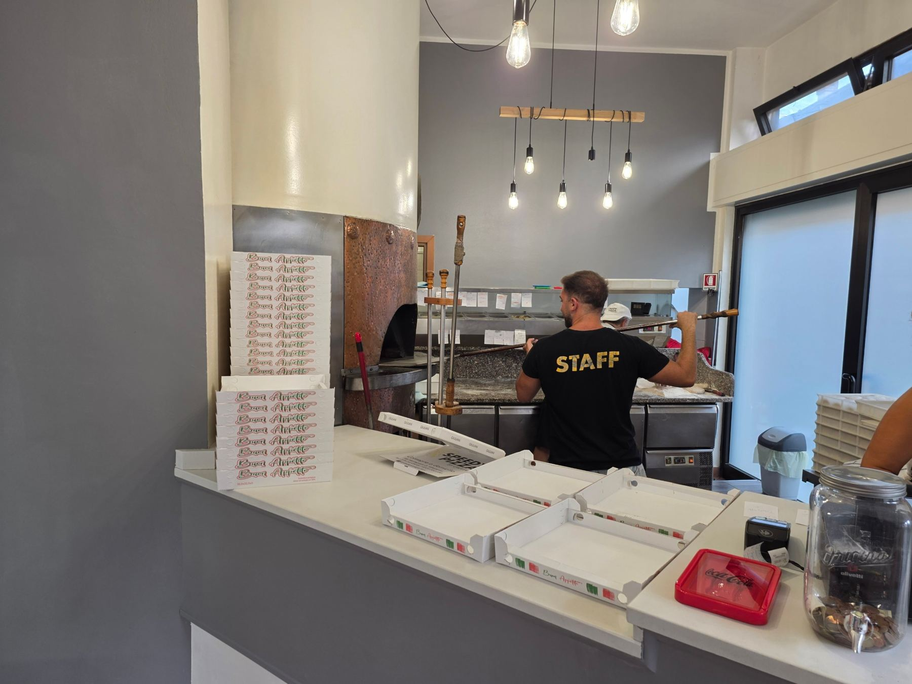

Consegna a Domicilio
Consegniamo direttamente a casa tua con i nostri fattorini (prenotando telefonicamente) oppure comodamente tramite le piattaforme Deliveroo e Just Eat.
Impasto leggero e altamente digeribile, con farina tipo 1 macinata a pietra. Scegli l'asporto, la consegna a domicilio con i nostri fattorini a Villastanza e Parabiago, ordina su Deliveroo e Just Eat, oppure gustala nei nostri posti a sedere in loco.
Sfoglia il Menù ↓Consegniamo direttamente a casa tua con i nostri fattorini (prenotando telefonicamente) oppure comodamente tramite le piattaforme Deliveroo e Just Eat.
Ordina al telefono allo 0331 553188 e passa a ritirare la tua pizza calda appena sfornata. Disponibile anche l'amato formato "Pizza Famiglia" da condividere.
Vuoi gustare la pizza caldissima sul momento? Il locale dispone di alcuni comodi posti a sedere per mangiare in loco.
Speedy Pizza by Giuliani nasce a Villastanza con un'idea semplice: fare bene la pizza e portarla ancora calda. Il pizzaiolo Antonio Giuliani prepara impasti leggeri e altamente digeribili, con farina tipo 1 macinata a pietra, cotti nel forno a legna in rame del locale.
Scegliamo con cura gli ingredienti e curiamo direttamente il servizio: un team cordiale e puntuale, che ritiri al banco o consegni a casa.

Indirizzo
Via Paolo Mantegazza, 3
20015 Villastanza di Parabiago (MI)
Telefono
0331 553188
| Martedì – Sabato | 11:00 – 14:00 · 17:30 – 21:30 |
|---|---|
| Domenica | 17:30 – 21:30 |
| Lunedì | Chiuso |